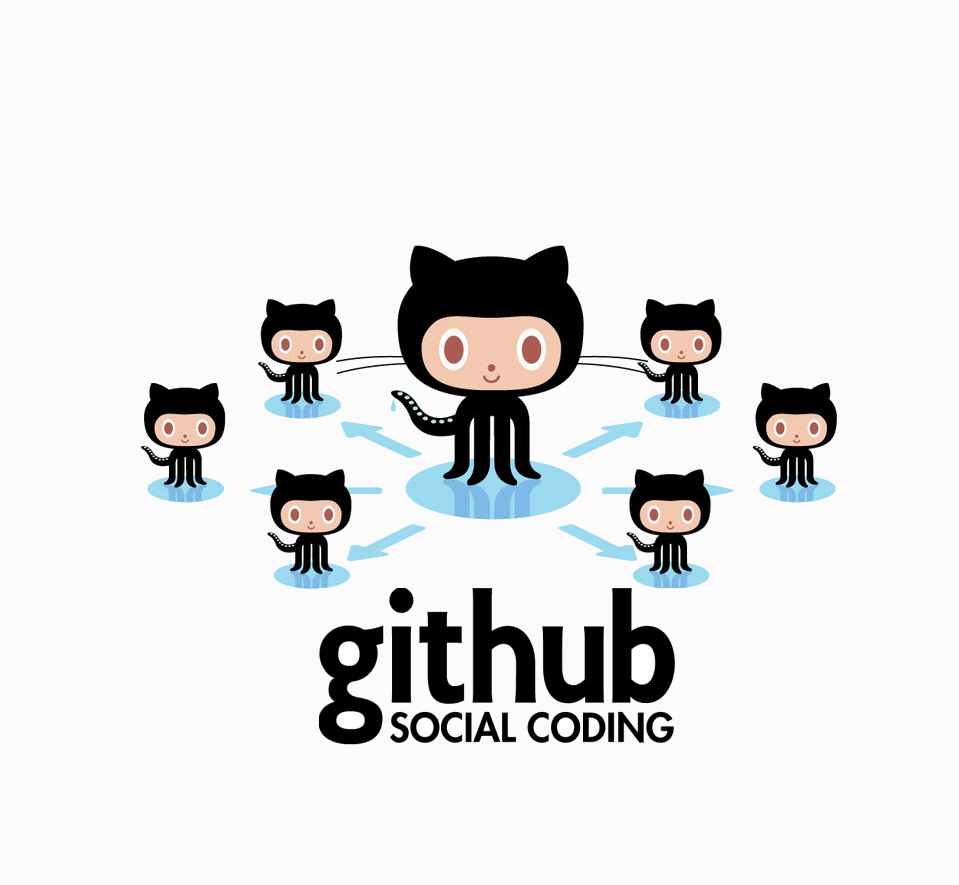
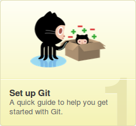
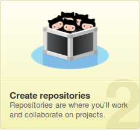
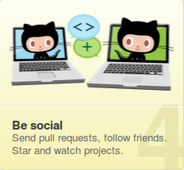
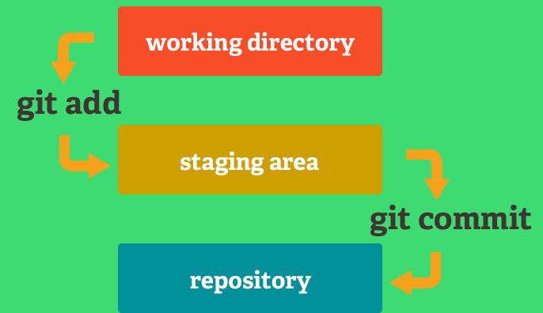
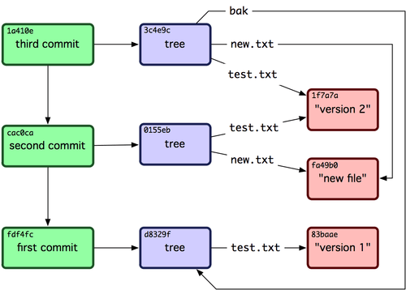
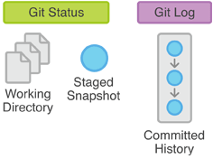
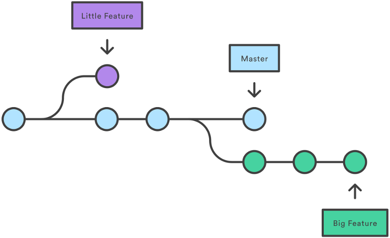
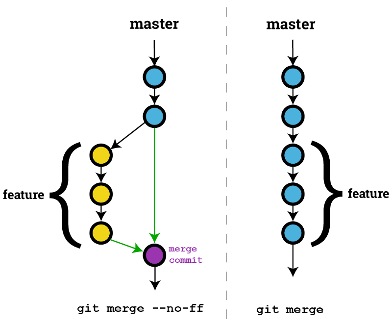

A quoi sert Git ?
Git est un logiciel que vous installez sur votre ordinateur et qui sert a créer des versions sur tout type de documents se trouvant sur votre ordinateur.
Cela peut etre des fichiers de programation que vous etes en train de créer, ou bien un fichier Word, ou bien encore une image, etc...
L'avantage quand l'on utilise Git c'est de pouvoir creer un Commit a chaque étape de la création de son projet....et croyez moi, un simple petit Commit pourra peut etre un jour vous sauvez la vie....du moins la vie de votre projet.
Pour comprendre ce qu'est un Commit vous pouvez cliquer sur le lien associé !
Et GitHub alors ?
GitHub est un site internet qui vous propose de stocker votre projet en ligne, et cela à plusieurs avantage :
- Securisé son projet
- Pouvoir le partager
- Travailler a plusieur dessus
- Le cloner et y avoir accés de partout
En effet, lorsque vous maitriserez les bases en ce qui concerne Git, il vous suffira d'une instruction pour sauvegarder votre projet, telecharger les dernieres mise a jour que vos amies ont fait dessus, consulter les derniers Commit, etc ...
Tout cela grace a votre Git qui communiquera avec votre projet que vous avez stocké sur GitHub.




Qu'est ce qu'un Commit ?
Un 'Commit' est une forme de sauvegarde de l'etat de votre projet, cela reviens a recensé dans un repository (un referenciel) une liste de toutes les modification apportées a votre projet.
Pour bien comprendre, cela reviens a dire a Git :
A cette instant donnée, j ai fait telle ou telle modification sur mon projet. Git enregistre cela sous forme de Commit dans son repository avec la date et l heure precise, ainsi qu'avec votre nom et un descriptif que vous lui aurais donné afin de savoir les elements nouveaux apportés au projet en cours.
Le commit generé est referencé a l'aide d'un sha (une clé codé) qui vous servira a revenir a votre projet dans l'état exact qu'il etait au moment de la création de ce commit. Qu'elles sont les interet d'un commit ?
- Si votre projet ne fonctionne plus, vous pouvez revenir a une ancienne version qui elle fonctionnait parfaitement.
- Si vous travaillez a plusieur sur un meme projet, cela vous permet de connaitre le descriptif des modifications faite par vos collegues.
- Cela vous permet de garder une trace dans le temps des modifications et de l'avancé de votres projet.



Qu'est ce que Git Log ?
La fonction Git log vous permet de voir tous les commit qui ont etaient créées sur votre projet depuis le debut.
Le commit le plus recent est affiché en premier, il contient la clé 'sha' qui le caracterise ainsi que le nom de la personne qui l'a créé, la date, l heure, et le descriptif de ce commit.
C'est donc a partir de cette commande que vous pourrez recuperer et copier le 'sha' qui vous permettera de revenir a cette version precise de votre projet en cas de probleme.


Qu'est ce qu'une Branche ?
De base lorsque vous faites avancer votre projet et que vous le committez, toutes vos modification et amelioration se trouve sur la branche principale de votre Repository Git (a savoir la branche 'Master').
Mais vous pouvez a tout moment créer une nouvelle 'branche' afin de bifurquer de votre branche pricipale (master), il peut y avoir plusieurs raison a cela:
- Vous avez peut etre envie d'essayer un nouveau concept dont vous n'etes pas sur qu il fonctionnera
- Ou bien lors d'un projet a plusieurs, chacun devellope de son coté sur une branche differente.
Le but final etant de faire une fusion de votre nouvelle branche avec la branche principal(master), on appele cela faire un 'git merge'
